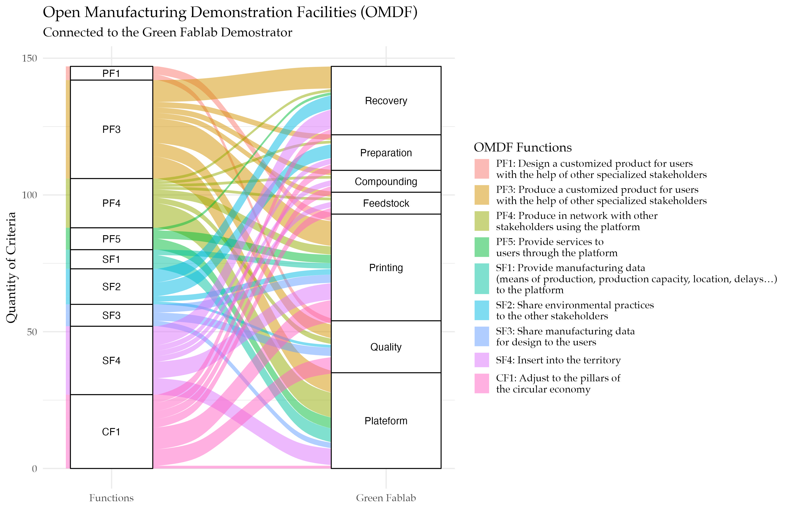

| Steps ID | Steps Description | Corresponding ID_DIT process |
|---|---|---|
| STEP 1 - RECEIVE DESIGN AND SPECIFICATION | Information about materials, finish, colour, texture, etc. from the INEDIT platform are sent to the manufacturing centre chosen by the ERP module and the Sustainability Driven Orchestrator (SDO). The expected files to be imported are: CAD file of the object, colour and texture, technical requirements identified in the design phase. | 7_1 |
| STEP 2 - VALIDATION OF THE TECHNICAL SPECIFICATIONS OF MODEL TO FABRICATE | Furniture producers or FabLab with the support of 3D printing technical experts evaluate the printability (if the part can be printed with the available technology) as well as validate the design. | 7_2 |
| STEP 3 - IDENTIFY LOCAL SOURCES OF PLASTIC WASTE | This step starts identifying local sources of plastic waste at least 2 km far from the production site. Designers and technicians will evaluate the quantity and quality of possible plastic wastes that could be used as secondary raw material. | 9_2 |
| STEP 4 – PUT IN PLACE SMART COLLECTOR | By using the Smart Collector developed by UL in the local areas (< 2 km) it is enabled to collect plastic waste from the sources identified before. | 9_6 |
| STEP 5 - TRANSPORT WASTE MATERIAL TO THE RECYCLING FACILITIES | All the recycled plastic waste is collected and transported to the recycling facilities | 9_9 |
| STEP 6 - ADEQUATION AND PREPARATION OF THE MATERIAL, MATERIAL PRINTABILITY VERIFICATION | The collected material has to be adequate in order to be utilised as recycled feedstock (sorting of usable material, cleaning, etc). The treated material needs to be tested and validated (evaluation on usage and printability). | 10_4 |
| STEP 7 - PATH PLANNING–3D PRINTING | Path planning software generates the best printing strategy to reduce the material used and time. The high-tech solution developed by UL manufactures using at least 30% of recycled plastic the product in the previously chosen manufacturing centre. | 5_1_2 |
| STEP 8 – POST PROCESSING | If needed, a post-processing phase refines the product in terms of aesthetic quality in order to meet customer requirements. Some parts need to be assembled in the manufacturing site before shipping to the customer. | 5_1_2 |
| STEP 9 – TEST BY USE | The DIT innovation space enables the designer to test the just realized prototype, to ensure proper functioning in real conditions. | 6_1_1 |
| STEP 10 – RE-DESIGN AND AFFINATION OF FABRICATION | If the test by use of the prototype fails, the failure is improved and corrected, repeating the process (re-involving the necessary stakeholders and the technologies used). | 5_2_2 |
| STEP 11 – VALIDATION | The use case ends validating the product printed, first by the manufacturer and the designer, second by a responsible entity for verification of design feasibility that provides safety and environmental certification and lastly by the customer use (feedback). | 6_1_2 |
Livrable WP6
Introduction
Plastic Issues for the European Union
Since 1950’, our society have gained enormous advantages in terms of quality of life thanks to the technical development of the development of plastic and polymer materials. Plastic is a material that is widely used in our daily lives and plays a fundamental role in industry and economic development. The plastic material are found in almost all our products: food packaging, cars, technological tools, clothing, among others. The main reason is that plastic materials offer a variety of chemical and mechanical properties to be useful for a wide array of applications. Plastics are extremely useful, but their mismanagement has affected the environment and our health. The over-consumption and especially bad practices (single use, difficulty of reuse, etc.), make plastics one of the major societal challenges of an ecological transition that has become imperative. The main problem is the end-of-life treatment which traditionally uses a centralized system where plastic waste often has to travel thousands of kilometers… to be incinerated or landfilled. In addition to the energy and environmental impact of their production, there is also the impact of the end of life.
Unfortunately, the plastic waste pollution poses a major threat because of the issue of non-degradability affecting the ecological environments (Hopewell et al., 2009; Ryberg et al., 2019; Thompson et al., 2009). Indeed, recycling rates remain small (approx. 14%) in the plastic packaging field on a global scale (Hahladakis and Iacovidou, 2018). Even in Europe, which tends to lead on environmental stewardship, the recycling rate is about 32.5 wt% (Plastics, 2019). However, these values consider the amount of plastic waste collected, rather than the total amount in circulation (Kranzinger et al., 2018). Rethinking the development and use of plastics is central to the circular economy paradigm, to provide less harmful options for the environment. Thus, more types of plastic packaging are available, but each reflects diverse circular economy strategies
To tackle this accumulation waste problem, the European strategy for plastics in the circular economy (CE) is gaining attention in the policy and business debate surrounding sustainable development of industrial production (European Commission, 2018; Geissdoerfer et al., 2017). CE tackles a central societal issue concerning the current principle “take, make, dispose” (linear economy) and its negative effects caused by the depletion of natural resources, waste generation, biodiversity loss, pollution (water, air, soil) and non-sustainable economics (van Buren et al., 2016). The validation (technical, economic, legislative) of waste plastic as a secondary raw material in industrial processes is considered now a core target to integrate CE into the plastic value chain (Simon, 2019). Strategies of open and closed-loop recycling as well as upcycling and downcycling functionality approaches can offer paths to validate the secondary raw materials (Zhuo and Levendis, 2014). The promotion of cross-sectorial valorization of plastic wastes through Industrial symbiosis approaches seems to be a relevant strategy for the circular economy strategies of the EU (Karayılan et al., 2021)
Context of the 3D Printing of Recycled Plastic Demostrator
Presentation of the scale of the demostrator: Rives de Meurthe district (Nancy, France)
The demonstrator is placed at the City of Nancy - France. Nancy is a city located in northeastern France, in the region of Lorraine. It is the capital of the Meurthe-et-Moselle department and has a population of approximately 105,000 inhabitants.
It is the capital of the Meurthe-et-Moselle department, on the Meurthe River in Lorraine. Nancy was the capital of the steel industry until its collapse. In 1977, it created France’s third largest technology park, Nancy-Brabois, which is very accessible thanks to the highway network.
Located in the east of the city, the Rives de Meurthe district extends from the banks of the Meurthe in the east to the boulevard Lobau and the boulevard of the 26th infantry regiment in the west. To the south, it is bounded by the rue de Tomblaine and to the north by the rue du Crosne. It is separated from the rest of the city of Nancy by the canal from the Marne to the Rhine. It thus gives the impression of being an independent city, adjacent to Nancy.
Third place Octroi Nancy
The third place Octroi Nancy is a part of the neighborhood of the Rives de Meurthe. This project transforms the former slaughterhouses of the city of Nancy into “cultural, creative and citizen” third place with \(4600~m^2\) of renovated buildings (Pallot et al., 2021). Four large buildings (Figure 1) were adequated to provide a friendly and multidisciplinary meeting place between culture and innovation; open to experimentation and intended to operate as a creative laboratory for the city. This place is intended to be an open space allowing the connection of future occupants, such as artists and creatives, with the inhabitants of the city and companies.
At the 2023, this third place is an open ecosystem that will bring together artists, researchers and creative people with the public, the city’s inhabitants and businesses.
Lorraine Fab Living Lab
The Lorraine Smart Cities Living Lab (LSCLL) is a trans-disciplinary resource center of the Université de Lorraine, to support and link the different societal challenges of the Lorraine territory with the local resources. It enables the integration of different users, implementing collaborative and agile approaches in the service of Research, Development of Innovations, Training and a Citizen Culture. It experiments in terms of projects, governance and support platform since 2008, involving several laboratories and other public and private partners as detailed in the Figure 2 (a). Since 2010, this project is member of the European Network of Living Labs (ENoLL)1, seeking to develop public-private-population Partnerships (PPPPs) to disseminate innovation and related practices.
Since 2014, the LSCLL formalizes its strategic intention with the the Lorraine Fab Living Lab(LF2L) research platform for prospective assessment of innovative usages (Dupont et al., 2016).
The LF2L physical environment is constituted by a collaborative and a fabLab space. The collaborative space allows users to foster co-operation in engineering design with different stakeholders in order to new create concepts/designs. On the other hand, FabLab space allows users to materialize the concepts/designs in an easy and quick way in order to have an prospective evaluation (Boujut and Blanco, 2003; Dupont et al., 2015, 2014). The synergy of these two spaces enables the project development in a living lab approach taking into account the User Centered Design principles.
The conceptual framework is composed of three main elements as illustrated in Figure 3:
- Co-creation: Creative process to find alternative resolution concepts to a problem-topic given integrating the key stakeholders in the process.
- Prototyping: Materialization (virtual/real) of the concept in order to have a first and quick in- sight.
- Evaluation: Establishment of the pertinence of the concepts in order to create a feedback/improvement process.
The conceptual innovation framework of LF2L takes into consideration the 2D (concept), 3D (object), 4D (over time) approaches involving different type of stakeholders (e.g. researches, companies, networks,) in order to have a foresight usage evaluation of a new concept, technology or project. The stages and 2D/3D/4D resources allowing prospective assessment of innovative usages in order to support this conceptual framework inside this “innovation space” as indicated in figure 2.3 (Dupont et al., 2016, 2015): This approach is useful to accelerate the deployment of industrial and/or urban demonstrators.
3D Printing of recycled plastic demonstrator: the “Green FabLab”
Rationale for the technological system of the 3D printing recycling demonstrator
Based on the context characteristics of the (LF2L) and the Octroi local ecosystems, the 3D printed demonstrator, also called locally as the “Green Fablab”, it is an initial socio-technical demonstrator of the distributed recycling approach that combines a living lab approach inside a citizen third place ecosystem.
The Green FabLab demonstrator aims to experiment the technical feasibility evaluation of a distributed and local plastic recycling for 3D printing technology in the context of these open innovation spaces such as fab labs, Hackerspaces or even industrial prototyping zones. In these geographically distributed spaces, the polymer recycling process of the surrounding areas (streets, neighbourhood, industrial zones) will be carried out at small lot sizes minimizing, energy consumptions, and carbon emissions compared to the tradition centralized systems, as some researches have already explored this path.
The main purpose of this demonstrator in the INEDIT project is to understand the conditions under which to deploy a notion of circular economy with the feedstock of the open source 3D printers and manual desktop injection. The outputs are, not only by minimizing use of the environment as a sink for residuals but – perhaps more importantly – by minimizing the use of virgin materials. Hence, the environmental impact of this technology is significantly reduced. Moreover, taking into account the exponential growth of these spaces (Fablab, Hakerspace, Makespace), they could help to increase the efficiency to the problem of polymer recycling through the development of a distributed recycling approach.
The Green FabLab project aims to demonstrate that plastic waste material can have several uses, and therefore several values, during its life cycle. The same material could be recycled and transformed into new raw material for different products. It is in this spirit that many associations, SMEs, local authorities and individuals are developing new local recycling practices that could allow us to aim for an economy that is more respectful of the environment, fairer for society and more engaging for local politicians.
The Additive manufacturing (AM) -also known as 3D printing- is an important industrial vector in the and its direct (and distributed) manufacturing capabilities is becoming a key industrial process that could play a relevant role in the transition from a linear to circular economy (Despeisse et al., 2017). AM technologies is expected to transform the production process (Chen et al., 2017; Jiang et al., 2017; Rahman et al., 2018) thanks to its ability to transform a numerical model into a deposition of material (points, lines or areas) to create a 3D part (Bourell et al., 2017). The expiration of the first patents has contributed to an increased interest, creating consumer value and potential for disruption (Beltagui et al., 2021; West and Kuk, 2016). In economic terms, the global additive manufacturing market is expected to reach USD 23.33 billion by 2026 (Data, 2019). However, determining when and how to take advantage of the benefits is a challenge for traditional means of production. From a societal viewpoint, Jiang et al. (2017) reported that the product development could change from traditional stage-gate models to iterative, agile processes changing the scenario by 2030.
The technical development of INEDIT’s demonstrator is based on the distributed recycling via additive manufacturing (DRAM) approach (Cruz Sanchez et al., 2020). This approach is a major scientific output from the INEDIT project as a proposition of the future industrial landscape.
DRAM is defined as the use of recycled materials by means of mechanical recycling process in the 3D printing process chain. In the literature, DRAM approach emphasizes the technical steps required to reuse plastic waste through the recycling chains for material-extrusion-based 3D printing (Cruz Sanchez et al., 2020; Little et al., 2020). The use of recycled material, either in the form of raw material or blended with virgin material, is a method of special interest to contribute to sustainable manufacturing (Zhao et al., 2018).
Figure 5 illustrates the conceptual model of DRAM.
In a general overview, the Recovery (I) phase concerns the logistic operations to consider to collect the plastic wastes to be reused in DRAM. The Preparation (II) phase corresponds to the actions and strategies to identify, separate, sort, size reduce and clean waste plastic to guarantee adequate quality for DRAM. The Compounding (III) phase refers to the development of mono- and composite-materials. The Feedstock (IV) phase identifies the actions to fabricate the material usable for the printing process, either filament for Fused Filament Fabrication (FFF) or the particle size for Fused Granular Fabrication (FGF). The Printing (V) stage identifies applications and process improvements for the recycled printed part. The Quality (VI) phase identifies the multi-level technical characterization performed to the recycled material.
In the DRAM methodology, consumers have an economic incentive to recycle. This is because they can use their waste as feedstock for a wide range of consumer products that can be produced for a fraction of the conventional cost of the equivalent products. Moreover, 3D printing is especially well suited because it enables the production of parts with (almost) no waste, and could reduce the waste related to the material by more than 40 %, reusing 95% of the unused material (Petrovic et al., 2011). Currently, most of the cost of 3D printing is associated with filament (Wittbrodt et al., 2013). By recycling raw materials such as Polylactic acid (PLA), one of the most frequently used materials in 3D printing, it is possible to reduce the carbon dioxide emissions that are incurred by transport to landfills or shipping to customers, offering environmental benefits (Santander et al., 2020).
A large number of products can already be manufactured with AM, which affects the geographical spread and density of global value chains (Laplume et al., 2016). It is expected that the reach of AM printable products will be much greater in the future, as the production of multi-material and built-in functionalities (e.g. electronics) will be possible to a large extent. In addition, the production of spare parts can be carried out on-site, modifying the role of suppliers in the production lines (Zanoni et al., 2019). Matt et al. (2015) explored the stages of distributed model factories and decentralized production types ranging from distributed capabilities to cloud production. Thus, the need of transport will be much more carefully because the fact that AM will enable decentralization of production to localities near customers or in the most extreme distributed scenario at the customer’s premises (Bonnín Roca et al., 2019; Petersen and Pearce, 2017; Wittbrodt et al., 2013). Moreover, AM technology makes it possible to reduce market entry barriers, reduce capital requirements and achieve an efficient minimum scale of production to promote distributed, flexible forms of production (Despeisse et al., 2017).
This enables an alternative option from an economy-of-scale to an economy-of-scope, where the products are highly personalized satisfying niche communities or even individuals (Hienerth et al., 2014; Petrick2014?). For these reasons, the AM technology could be a driver for a shift in manufacturing from globally distributed production to local facilities. Significant efforts are being made by industry and the scientific community to move AM techniques from rapid prototyping and tooling stages towards direct digital manufacturing (DDM) (Gibson et al., 2010; Holmström et al., 2016), with the concomitant environmental and social benefits. Nevertheless, Niaki et al. (2019) demonstrated that environmental and social benefits are not the key preferential factors in the adoption of AM technologies in different industrial sectors. Only the economic factor remains relevant in the AM implementation, considering time- and cost-saving as the most important reasons.
Positionnement of Use case for OMDF Functions

Hypothesis of UL case for deployment in reality
The implementation of the Green Fablab needs to be done considering certain assumptions and simplifications to reduce the complexity of this socio-technical system. The following assumptions were assumed in terms of geographical scale, material recollection and manufacturing aspects:
From a material perspective, only certain types of plastic wastes are considered. Specifically, Polyethylene terephthalate (PET), High density Polyethylene (HDPE), Polypropylene (PP) and Polylactic Acid (PLA). The major reason is from the technical perspective relies on the availability of these materials at the local area around the physical demonstrator.
PLA is one of the most used plastics in 3D printing. As plastic waste sources, PLA waste from clean sources like printed prototypes or 3D printed parts scard has been considered.
HDPE is one of ???
The recycling system considers the sorting, separation and cleaning process as a high because the collected material corresponds to a non-contaminated waste. For example, discarded 3D printing parts used for prototyping.
From a geographical point of view, only plastic waste collected from the smart collectors was considered. Nevertheless, as MVP use case demonstrator, this model can be extrapolated to schools and high schools in the Lorraine region (France) have been considered, and the route of recovery and delivery considered is obtained in the work of (Santander et al., 2020).
The 3D printing activities carried out in these establishments have a specific purpose of making product prototypes and mock-ups, which allow to generate testing activities, design evaluations, functional evaluations, corrections. Therefore, after a short lifetime, 3D printing can be a source of significant amounts of plastic waste due to printed parts that do not possess the desired quality, unused raw materials, or products that have already fulfilled their life cycle (Alexandre2020?)
Technical characterization of the 3D printing of recycled demonstrator
Recovery I
The first step in the implementation of the Green Fablab OMDF is the activity of Recovery I. This phase aims to establish a minimal baseline logistic operations to consider to collect the plastic wastes to be recycled in the process. In the scientific literature, the recovery is one of the main activities to considered in the recycling process given that this structures a supply chain that certainly is variable (i.e. in function of the public support to sort the material in the specific points of collection). This process is the first step to create a closed-loop supply network approach for the distributed manufacturing (Santander et al., 2020).
The collection tasks consists of collecting plastic waste at different established points, which are then transported to a treatment center where it is recycled. The collection and recycling process aims to generate a recycling micro-network at the local level (neighborhood scale), which allows the recovery and revaluation of plastic waste through 3D printing. This allows to save impacts related to the traditional treatment of plastic waste, as well as to increase the recycling capacity in the city, giving more independence over the recycling process. Figure 6 illustrates the process model considered.
The main difficult relies in the pertinent identification and the quality state of the plastic waste. Therefore, in the framework of the INEDIT project, the UL case demonstrator developed a “smart collector prototype” as illustrated in the Figure 8. The complete documentation of the technical device can be found in the following open access reference (Gabriel and Cruz, 2023). Given the possible implementation in other contexts, the source files are shared in open-source repository with the purpose that open communities to take advantage the experiences developed at the Université de Lorraine. Eventually, the open communities can propose improvements and better versions.

This is a relevant strategy given the cross-line of Industry 4.0 and circular economy, which is opening up fields such as smart waste management systems options to improve the effectiveness of different materials, including plastic waste (Ranjbari et al., 2021) using information technology tools with the advent of the Internet of Things (IoT) Rejeb et al. (2022). Smart waste management system (SWMS) consists of public garbage collectors with embedded technology that is used to monitor real-time level of garbage bins in public places (Bano et al., 2020). The interest of this system is to optimize the path for the garbage collecting van that eventually reduces fuel cost. However, this work is mainly based on simulation. Therefore, there is an avenue to simplify experimentation in this domain using common open-source technology (hardware and software) (Pearce and Mushtaq, 2009) to implement projects that require heavy infrastructure such as routers and a gateway to deploy in the territory.
The main functional requirement of the smart collector is to collect and provide data about plastic waste production in order to design a local and distributed recycling chain of value. However, the smart collector may be used in various use cases such as:
- Monitoring the quantity of any other product that is collected over a large area.
- Generating data about behavior to more precisely dimensions public infrastructure.
- Monitoring the transformation and recycling process inside the transformation unit to follow the state and quantity of raw material and final product.
- Initiating a digitization process in the waste management process as the information system element present here is flexible and commonly used in various types of projects.
The device uses a controller compatible with batteries and use WAN technology to avoid the deployment of routers for data acquisition. Although using various types of sensors allows us to achieve better results (Catania and Ventura, 2014) by crossing data, the main indicator remains the weight.
The process illustrated by the Figure 8 (a) can be described in the as follows:
Smart Collector installation: The first step is to identify the main actors in the neighborhood through meetings, visits and interviews in order to propose integration into the recycling network by installing a smart collector on their premises.
Supervision: The monitoring is done through a dashboard that provides direct information sent by the smart collector. This allows to know the weight of each installed smart collector, allowing to have an approximation of its degree of occupancy.
Receiving and storing plastic waste: The storage area must be organized and functional with respect to the needs of the demonstrator.
Plan and execute the collection:
In the scientific literature, the reverse logistic and closed loop supply chains have been extensively studied in the scientific literature. For instance, (Santander2021?) evaluated the benefits of a near loop and closed loop recycling network focused on additive manufacturing, mainly producing recycled filament. The main results show an economic and environmental benefit of sourcing filament from recycled plastic rather than purchasing exported virgin filament.
Preparation II
The second phase of the corresponds to the actions and processes to identify, separate, sort, size reduce and clean waste plastic to guarantee with the purpose to obtain feedstock material that is adequate for the distributed recycling process.
The plastic waste preparation process aims to conditioned the collected plastic to the requirements of 3D printing. For this process 3 main sub-processes are considered:
Identification and Sorting: These two processes aim to identify the type of plastic given the regular standard for the polymer industry. The process of identification and separation of plastics is done manually and allows to separate the plastics that can be used as raw material for further production processes.
Cleaning: This process is aims to remove the traces of any other substance that may be present in the plastic waste. In this way the processing machines will not be exposed to possible anomalies linked to material impurities.
Size reduction: The size reduction process is carried out to possible obtain an adequate granulometry. This process allows to adapt the plastic waste for the direct injection process and/or the extrusion process.
Drying phase: This step prevents the formation of bubbles in the recycled material when it is melted during the following extrusion or densification step (Niaounakis2013?). Moreover, complete elimination of water prevent hydrolytic decomposition of the molecular chains during the melting or plasticization, so that the treated material has to be as dry as possible.
Compounding III
The Compounding phase is related to the operation, strategies in the development of composite materials using recycled feedstock intended to be use in a printing process. There have been several literature reviews about the technical aspect of composite materials in the additive manufacturing context Mohan et al. (2017).
Special attention has been paid on material extrusion technologies in the production of polymer/composite feedstocks as it is economical, environmentally advantageous and adaptable to flexible filament material (Singh et al., 2017). For example, Mohan et al. (2017) presented a review on composite materials and process parameters optimisation for the fused deposition modelling (FDM) process for improving the mechanical properties (i.e. tensile strength, fatigue). Brenken et al. (2018) reported a detailed summary of mechanical properties of printed parts for different composite material for fused filament fabrication. Five majors strategies are elucidated from the literature review such as:
In the context of the Green Fablab demonstrator of INEDIT project, the focus is to study the 1) mono-recycled material and 2) the virgin-recycled blend material. The development of recycling niches of mono-material where the additive manufacturing can be implemented is key to study. Different studies in laboratory conditions have been made to show the technical feasibility of recycling. They include HDPE Kreiger and Pearce (2013), Biomass-derived poly(ethylene-2,5-furandicarboxylate) (PEF) (Kucherov et al., 2017), PLA (Cruz Sanchez et al., 2017), Linear Low Density Polyethylene (LLDPE)/ low density polyethylene (LDPE), (Hart et al., 2018), thermoplastic elastomer (TPE) (Woern and Pearce, 2017). In fact, Hart et al. (2018) demonstrated the reconstitution of residual polymeric packaging waste from Meals-Ready-to-Eat (MREs) generated by soldiers around the world into additively manufactured appliances. One conclusion of these studies is the positive technical use of recycled mono-material for additive manufacturing purposes.
However, it has to be highlighted that one major assumption of these studies relies in that the material used is already sorted, cleaned and using a same type of discarded product. For INEDIT project, the interest is to take into account the inner variability that could be in the recovery process, concerning the type of material given the fact, while there are seven types of recycling symbols for each type of polymer, one major constraint in the current systems is that each manufacturing company have a patented use of the additive in the polymer matrix, in order to fulfil its initial function of the product.
Feedstock IV
The Feedstock III phase refers to the processes in order to transform the plastic waste into usable material material for the fabrication stage. Two outputs are seen in this etape: 1) the filament feedstock and 2) the pellet feedstock. The use of filament or pellet material are in coherence with the machine process used in the fabrication (cf section 4.4.5). The figure XX present the modeling of the process:
The filament and pellet production process makes it possible to produce the necessary raw material from plastic waste. The production of these intermediate products allows the use of different technologies related. Before using these products (filaments and pellets) it is necessary to carry out evaluation tests to assess the geometrical characteristics that are necessary in the printing process.
Figure XX and table present the technical characteristics of the material equipement
Fabrication process – Technological mix to valorize the recycled material
In this step, the major output is the valorisation of the plastic waste material using different two alternative paths: 1) Desktop injection process, and 2), 3D printing process. As matter of the validation of the demonstrator at TRL 6 level, the ambition of the demonstrator in the INEDIT project is to experiment and prove a technological ecosystem mix that seeks to valorise in a distributed approach different plastics for different purposes and stakeholders. Therefore, the initial choice is these two paths to create objects injected and 3D printed parts that are useful to the local ecosystem of the demonstrator. The technologies are presented in the following paragraphs.
Desktop injection moulding
Injection mouding is one of the most used technique to form plastic materials.
The major point in the ‘Green Fablab’ case is to propose a maual recycled aspecg to possible reutse the plastic waste
3D printing process: Fused Filament & Granular Fabrication (FFF & FGF)
In the era of the additive manufacturing technology, without a doubt, the material extrusion-based systems such as the fused filament fabrication (FFF) has been one of the prominent processes. In fact, the technological development of open-source 3D printers is creating more affordable Additive Manufacturing (AM) machines for society in different applications. It provides the possibility of mass diffusion of this technology, and consequently, AM is being recognised as a disruptive that could up-end the last two centuries of approaches to design and manufacturing Birtchnell and Urry (2013).
In the Green Fablab demonstrator, we have two types of material-based systems: 1) Fused filament fabrication (FFF) and 2) Fused Granular Fabrication (FGF):
The filament fabrication was developed and patented in 1989 by Scott Crump as Fused Deposition Modelling, and since 2009, the technology became open source (Crump1992?), known as Fused Filament Fabrication, to establish the difference betwwen the registred mark. A schematic representation of this technology is presented in Figure 8 (a). This process usually uses thermoplastic polymer filaments that are heated until a temperature slightly higher than the melting temperature at the nozzle of the machine, reaching a semi-liquid state. At this point, the polymer is extruded on the platform to create the first layer of the object and after that, the polymer continues to be printed on top of the previous layer, so that, filament fuses with the previous layer and then is solidified at room temperature after printing Cruz Sanchez et al. (2017).
For the
On the other hand, the Fused Granular Fabrication is a direct extrusion systems of pellets is a key technical advancement to facilitate the use of recycled material in the printing process. Volpato et al. (2015) describes the development of a piston driven extrusion head that can extrude polypropylene granules into a filament. The head was designed to minimize the volume of material fused during the extrusion process and reduce the effect of material degradation. Canessa et al. (2017) developed a mini extruder for pellets or granules of recycled plastic that can be used in a RepRap FDM 3D printer for rapid prototyping. The use of Moineau pump technology to add precise volumetric control to the extrusion of pellets opens extraordinary new possibilities. It is important to mention that a Moineau pump has to be coupled to a first stage Auger screw. This ensures a continuous feed of melted plastic with-out inclusion of air bubbles, since the Moineau pump itself cannot guarantee such condition. However, it is also important to highlight that currently this technology is the phase of laboratory experimentation and initial market diffusion. The complexity
Quality Assessment VI
Operationalization of Do-It-Together process for 3D Printing Recycled Plastic Use Case.
Explanation of the INEDIT project but focusing on the Open Manufacturing Demonstration Facilities process
Step 1 – Receive Design and Specification
The first step in the reception of the design models and specifications from the INEDIT platform. The starting point of this activity is the reception of the respective documents that contains the 3D model to be manufactured by the use case.
One of the outputs of the co-creation phase of INEDIT is the creation of a first initial model that can be exploitable fro the in the open manufacturing process. In that way, the model is received taking into account the specific requirements of the customer, and the required inputs to determine if the technologies available in the demonstrated have the capacity to produce the product. In the case that it cannot be produced, it is necessary to notify immediately together with the arguments why it cannot be produced and offer ways of improvement.
Step 2 – Validation of the technical specifications of model to fabricate
Step 3 – Identify local source of plastic waste
This step seeks to establish a first network of plastic wastes source from the local ecosystem. The task of the identification of local source of plastic is fundamental as the first stage in the recovery process.
As illustrated in the Figure 9, the methodological approach included the following steps: 1) Pre-diagnosis of the territorial context, 2) Identification of the actors, 3) Analysis of the actors’ involvement and implementation of the smart collector, and finally, 4) Implementation & monitoring.
Regarding the pre-diagnosis phase, the purpose was to align the INEDIT project with the territorial context. To do so, between Oct 2021 and June 2022, the UL team had exchange with key actors of territorial development and the priorities in terms of sustainable development. Association ATP, Echogeste, Agence Scalen. The main output of this phase was the establishment of a initial Swot-Pestel analysis for the thatn can
Based on this first step, it was possible to identify a target of actors subtle to be relevant according to the following criteria. First, they need to be in a geographical range perimeter (less than 2km around the Green Fablab) following the observations of Santander et al. (2020). Limiting the geographical perimeter of collection helps in the reduction of environmental impact because of the transport means. Second, the diversification of the actor profile (general public, spectators, students…) and/or stakeholder activity (Public, Private, Associative) was an important criteria to guarantee a significant quantity of collection and a sensitization to the management of the plastic. In function of their profile, it can be hypothesize that there a are a different rate of frequentation in the establishments with diversified profiles of actors.
A total of XX actors were interviewed in the period of time of XX-2020 - YY-2022. They were included companies (mainly small and medium size), associative entities (sports, cultural, academic, economic…), academic and training institutions. The diversity of the publics was an interesting criterion for our study. Participants in the economic, cultural and social dynamics of the district through their membership in the local association of economic actors of the territory (ATP Rives de Meurthes). 23 out of the fifty actors solicited to participate in the survey agreed to participate (of which 21 by physical or telephone interview and 2 by electronic questionnaire). The scope of activity of most of the respondents is local (at the level of the neighborhood or city) which may reflect a strong territorial anchoring and a commitment to local concerns and issues (waste management, social welfare, local job creation…). The majority of their business decisions are made locally, which reduces the risk of depending on the interests of entities outside the territory
To do this, we identified the role of each actor, then the sources of plastic waste collection, and then identify the sources of 3D printing and potential synergies with LF2L. In order to achieve these results, an exchange with key actors in territorial development was necessary.
Step 4: Put in place smart collectors
Step 5: Transport waste material to the recycling facilities
Step 6: Adequation and preparation of the material
Step 7: Path planning - 3D Printing
Step 8 : Post-processing
Step 9: Implementation Examples
Test by Use
Step 10: Re-design and improvements of fabrication
Step 11: Validation
Conclusions
Plastic waste as secondary ressources and possibilities for a secondary market
Qualification of the waste
Mains challenges to tackle
Legislation of waste and
More examples neeed it in the recycling for education purposes
Bibliography
Anderson, I., 2017. Mechanical Properties of Specimens 3D Printed with Virgin and Recycled Polylactic Acid. 3D Printing and Additive Manufacturing 4, 110–115. https://doi.org/10.1089/3dp.2016.0054
Bano, A., Ud Din, I., Al-Huqail, A.A., 2020. AIoT-Based Smart Bin for Real-Time Monitoring and Management of Solid Waste. Scientific Programming 2020. https://doi.org/10.1155/2020/6613263
Beltagui, A., Sesis, A., Stylos, N., 2021. A bricolage perspective on democratising innovation: The case of 3D printing in makerspaces. Technological Forecasting and Social Change 163, 120453. https://doi.org/10.1016/j.techfore.2020.120453
Birtchnell, T., Urry, J., 2013. Fabricating Futures and the Movement of Objects. Mobilities 8, 388–405. https://doi.org/10.1080/17450101.2012.745697
Bonnín Roca, J., Vaishnav, P., Laureijs, R.E., Mendonça, J., Fuchs, E.R.H., 2019. Technology cost drivers for a potential transition to decentralized manufacturing. Additive Manufacturing 28, 136–151. https://doi.org/10.1016/j.addma.2019.04.010
Boujut, J.-F., Blanco, E., 2003. Intermediary Objects as a mean to foster Co-operation. Engineering Design Computer Supported Cooperative Work 205–219.
Bourell, D., Kruth, J.P., Leu, M., Levy, G., Rosen, D., Beese, A.M., Clare, A., 2017. Materials for additive manufacturing. CIRP Annals 66, 659–681. https://doi.org/10.1016/j.cirp.2017.05.009
Brenken, B., Barocio, E., Favaloro, A., Kunc, V., Pipes, R.B., 2018. Fused filament fabrication of fiber-reinforced polymers: A review. Additive Manufacturing 21, 1–16. https://doi.org/10.1016/j.addma.2018.01.002
Canessa, E., Baruzzo, M., Fonda, C., 2017. Study of Moineau-based pumps for the volumetric extrusion of pellets. Additive Manufacturing 17, 143–150. https://doi.org/10.1016/j.addma.2017.08.015
Catania, V., Ventura, D., 2014. An approch for monitoring and smart planning of urban solid waste management using smart-M3 platform, in: Conference of Open Innovation Association, FRUCT. IEEE Computer Society, pp. 24–31. https://doi.org/10.1109/FRUCT.2014.6872422
Chen, L., He, Y., Yang, Y., Niu, S., Ren, H., 2017. The research status and development trend of additive manufacturing technology. The International Journal of Advanced Manufacturing Technology 89, 3651–3660. https://doi.org/10.1007/s00170-016-9335-4
Cruz Sanchez, F.A., Boudaoud, H., Camargo, M., Pearce, J.M., 2020. Plastic recycling in additive manufacturing: A systematic literature review and opportunities for the circular economy. Journal of Cleaner Production 264, 121602. https://doi.org/10.1016/j.jclepro.2020.121602
Cruz Sanchez, F.A., Boudaoud, H., Hoppe, S., Camargo, M., 2017. Polymer recycling in an open-source additive manufacturing context: Mechanical issues. Additive Manufacturing 17, 87–105. https://doi.org/10.1016/j.addma.2017.05.013
Data, R.A., 2019. ReportsAndData2019. Additive Manufacturing Market To Reach USD 23.33 Billion By 2026.
Despeisse, M., Baumers, M., Brown, P., Charnley, F., Ford, S.J., Garmulewicz, A., Knowles, S., Minshall, T.H.W., Mortara, L., Reed-Tsochas, F.P., Rowley, J., 2017. Unlocking value for a circular economy through 3D printing: A research agenda. Technological Forecasting and Social Change 115, 75–84. https://doi.org/10.1016/j.techfore.2016.09.021
Dupont, L., Morel, L., Hubert, J., Guidat, C., 2014. Study case: Living Lab Mode for urban project design: Emergence of an ad hoc methodology through collaborative innovation, in: 2014 International Conference on Engineering, Technology and Innovation (ICE). IEEE, Bergamo, pp. 1–9. https://doi.org/10.1109/ICE.2014.6871550
Dupont, L., Morel, L., Lhoste, P., 2015. L ’ innovation Médiation scientifique , territorialité et développement local. Actes des Journées Hubert Curien, session Médiation Scientifique, territorialité et développement local, Colloque Science & You 2–8.
Dupont, L., Pallot, M., Morel, L., Pallot, M., 2016. Exploring the Appropriateness of Different Immersive Environments in the Context of an Innovation Process for Smart Cities. 22nd ICE/IEEE International Technology Management Conference, 13–15.
European Commission, 2018. A european strategy for plastics in a circular economy, COM (2018). European Commission, Brussels. https://doi.org/10.1021/acs.est.7b02368
Fatimah, Y.A., Govindan, K., Murniningsih, R., Setiawan, A., 2020. Industry 4.0 based sustainable circular economy approach for smart waste management system to achieve sustainable development goals: A case study of Indonesia. Journal of Cleaner Production 269, 122263. https://doi.org/10.1016/j.jclepro.2020.122263
Gabriel, A., Cruz, F., 2023. Open source IoT-based collection bin applied to local plastic recycling. HardwareX 13, e00389. https://doi.org/10.1016/j.ohx.2022.e00389
Geissdoerfer, M., Savaget, P., Bocken, N.M.P., Hultink, E.J., 2017. The Circular Economy A new sustainability paradigm? Journal of Cleaner Production 143, 757–768. https://doi.org/10.1016/j.jclepro.2016.12.048
Gibson, I., Rosen, D.W., Stucker, B., 2010. Additive Manufacturing Technologies, Assembly Automation. Springer US, Boston, MA. https://doi.org/10.1007/978-1-4419-1120-9
Hahladakis, J.N., Iacovidou, E., 2018. Closing the loop on plastic packaging materials: What is quality and how does it affect their circularity? Science of The Total Environment 630, 1394–1400. https://doi.org/10.1016/j.scitotenv.2018.02.330
Hart, K.R., Frketic, J.B., Brown, J.R., 2018. Recycling meal-ready-to-eat (MRE) pouches into polymer filament for material extrusion additive manufacturing. Additive Manufacturing 21, 536–543. https://doi.org/10.1016/j.addma.2018.04.011
Hienerth, C., von Hippel, E., Berg Jensen, M., 2014. User community vs. Producer innovation development efficiency: A first empirical study. Research Policy 43, 190–201. https://doi.org/10.1016/j.respol.2013.07.010
Hofstätter, T., Pedersen, D.B., Tosello, G., Hansen, H.N., 2017. State-of-the-art of fiber-reinforced polymers in additive manufacturing technologies. Journal of Reinforced Plastics and Composites 36, 1061–1073. https://doi.org/10.1177/0731684417695648
Holmström, J., Holweg, M., Khajavi, S.H., Partanen, J., 2016. The direct digital manufacturing (r)evolution: Definition of a research agenda. Operations Management Research 9, 1–10. https://doi.org/10.1007/s12063-016-0106-z
Hopewell, J., Dvorak, R., Kosior, E., 2009. Plastics recycling: Challenges and opportunities. Philosophical Transactions of the Royal Society B: Biological Sciences 364, 2115–2126. https://doi.org/10.1098/rstb.2008.0311
Jiang, R., Kleer, R., Piller, F.T., 2017. Predicting the future of additive manufacturing: A Delphi study on economic and societal implications of 3D printing for 2030. Technological Forecasting and Social Change 117, 84–97. https://doi.org/10.1016/j.techfore.2017.01.006
Karayılan, S., Yılmaz, Ö., Uysal, Ç., Naneci, S., 2021. Prospective evaluation of circular economy practices within plastic packaging value chain through optimization of life cycle impacts and circularity. Resources, Conservation and Recycling 173, 105691. https://doi.org/10.1016/j.resconrec.2021.105691
Kranzinger, L., Pomberger, R., Schwabl, D., Flachberger, H., Bauer, M., Lehner, M., Hofer, W., 2018. Output-oriented analysis of the wet mechanical processing of polyolefin-rich waste for feedstock recycling. Waste Management & Research 36, 445–453. https://doi.org/10.1177/0734242X18764294
Kreiger, M., Pearce, J.M., 2013. Environmental Impacts of Distributed Manufacturing from 3-D Printing of Polymer Components and Products. MRS Proceedings 1492, 85–90. https://doi.org/10.1557/opl.2013.319
Kucherov, F.A., Gordeev, E.G., Kashin, A.S., Ananikov, V.P., 2017. Three-Dimensional Printing with Biomass-Derived PEF for Carbon-Neutral Manufacturing. Angewandte Chemie International Edition 56, 15931–15935. https://doi.org/10.1002/anie.201708528
Laplume, A.O., Petersen, B., Pearce, J.M., 2016. Global value chains from a 3D printing perspective. Journal of International Business Studies 47, 595–609. https://doi.org/10.1057/jibs.2015.47
Little, H.A., Tanikella, N.G., J. Reich, M., Fiedler, M.J., Snabes, S.L., Pearce, J.M., 2020. Towards Distributed Recycling with Additive Manufacturing of PET Flake Feedstocks. Materials 13, 4273. https://doi.org/10.3390/ma13194273
Matt, D.T., Rauch, E., Dallasega, P., 2015. Trends towards Distributed Manufacturing Systems and Modern Forms for their Design. Procedia CIRP 33, 185–190. https://doi.org/10.1016/j.procir.2015.06.034
Mohan, N., Senthil, P., Vinodh, S., Jayanth, N., 2017. A review on composite materials and process parameters optimisation for the fused deposition modelling process. Virtual and Physical Prototyping 12, 47–59. https://doi.org/10.1080/17452759.2016.1274490
Ngo, T.D., Kashani, A., Imbalzano, G., Nguyen, K.T.Q., Hui, D., 2018. Additive manufacturing (3D printing): A review of materials, methods, applications and challenges. Composites Part B: Engineering 143, 172–196. https://doi.org/10.1016/j.compositesb.2018.02.012
Niaki, M.K., Torabi, S.A., Nonino, F., 2019. Why manufacturers adopt additive manufacturing technologies: The role of sustainability. Journal of Cleaner Production 222, 381–392. https://doi.org/10.1016/j.jclepro.2019.03.019
Pallot, M., Dupont, L., Fleury, S., Araque-Tellez, G., Richir, S., 2021. Investigating the Impact of Visual Representations during Ideation: Towards Immersive eXperience Design, in: 2021 IEEE International Conference on Engineering, Technology and Innovation (ICE/ITMC). IEEE, p. 1. https://doi.org/10.1109/ICE/ITMC52061.2021.9570244
Pearce, J.M., Mushtaq, U., 2009. Overcoming technical constraints for obtaining sustainable development with open source appropriate technology. TIC-STH’09: 2009 IEEE Toronto International Conference - Science and Technology for Humanity 814–820. https://doi.org/10.1109/TIC-STH.2009.5444388
Petersen, E., Pearce, J., 2017. Emergence of Home Manufacturing in the Developed World: Return on Investment for Open-Source 3-D Printers. Technologies 5, 7. https://doi.org/10.3390/technologies5010007
Petrovic, V., Vicente Haro Gonzalez, J., Jordá Ferrando, O., Delgado Gordillo, J., Ramón Blasco Puchades, J., Portolés Griñan, L., 2011. Additive layered manufacturing: Sectors of industrial application shown through case studies. International Journal of Production Research 49, 1061–1079. https://doi.org/10.1080/00207540903479786
Plastics, E., 2019. Plastics - the Facts 2019.
Rahman, Z., Barakh Ali, S.F., Ozkan, T., Charoo, N.A., Reddy, I.K., Khan, M.A., 2018. Additive Manufacturing with 3D Printing: Progress from Bench to Bedside. The AAPS Journal 20, 101. https://doi.org/10.1208/s12248-018-0225-6
Ranjbari, M., Saidani, M., Esfandabadi, Z.S., Peng, W., Lam, S.S., Aghbashlo, M., Quatraro, F., Tabatabaei, M., Shams Esfandabadi, Z., Peng, W., Lam, S.S., Aghbashlo, M., Quatraro, F., Tabatabaei, M., 2021. Two decades of research on waste management in the circular economy: Insights from bibliometric, text mining, and content analyses. Journal of Cleaner Production 314, 128009. https://doi.org/10.1016/j.jclepro.2021.128009
Rejeb, A., Suhaiza, Z., Rejeb, K., Seuring, S., Treiblmaier, H., 2022. The Internet of Things and the circular economy: A systematic literature review and research agenda. Journal of Cleaner Production 350, 131439. https://doi.org/10.1016/J.JCLEPRO.2022.131439
Ryberg, M.W., Hauschild, M.Z., Wang, F., Averous-Monnery, S., Laurent, A., 2019. Global environmental losses of plastics across their value chains. Resources, Conservation and Recycling 151, 104459. https://doi.org/10.1016/j.resconrec.2019.104459
Santander, P., Cruz Sanchez, F.A., Boudaoud, H., Camargo, M., 2020. Closed loop supply chain network for local and distributed plastic recycling for 3D printing: A MILP-based optimization approach. Resources, Conservation and Recycling 154, 104531. https://doi.org/10.1016/j.resconrec.2019.104531
Simon, B., 2019. What are the most significant aspects of supporting the circular economy in the plastic industry? Resources, Conservation and Recycling 141, 299–300. https://doi.org/10.1016/j.resconrec.2018.10.044
Singh, S., Ramakrishna, S., Singh, R., 2017. Material issues in additive manufacturing: A review. Journal of Manufacturing Processes 25, 185–200. https://doi.org/10.1016/j.jmapro.2016.11.006
Thompson, R.C., Moore, C.J., vom Saal, F.S., Swan, S.H., 2009. Plastics, the environment and human health: Current consensus and future trends. Philosophical Transactions of the Royal Society B: Biological Sciences 364, 2153–2166. https://doi.org/10.1098/rstb.2009.0053
van Buren, N., Demmers, M., van der Heijden, R., Witlox, F., 2016. Towards a Circular Economy: The Role of Dutch Logistics Industries and Governments. Sustainability 8, 647. https://doi.org/10.3390/su8070647
Volpato, N., Kretschek, D., Foggiatto, J.A., Gomez da Silva Cruz, C.M., 2015. Experimental analysis of an extrusion system for additive manufacturing based on polymer pellets. The International Journal of Advanced Manufacturing Technology 81, 1519–1531. https://doi.org/10.1007/s00170-015-7300-2
West, J., Kuk, G., 2016. The complementarity of openness: How MakerBot leveraged Thingiverse in 3D printing 102, 169–181. https://doi.org/10.1016/j.techfore.2015.07.025
Wittbrodt, B.T., Glover, A.G., Laureto, J., Anzalone, G.C., Oppliger, D., Irwin, J.L., Pearce, J.M., 2013. Life-cycle economic analysis of distributed manufacturing with open-source 3-D printers. Mechatronics 23, 713–726. https://doi.org/10.1016/j.mechatronics.2013.06.002
Woern, A., Pearce, J., 2017. Distributed Manufacturing of Flexible Products: Technical Feasibility and Economic Viability. Technologies 5, 71. https://doi.org/10.3390/technologies5040071
Zanoni, S., Ashourpour, M., Bacchetti, A., Zanardini, M., Perona, M., 2019. Supply chain implications of additive manufacturing: A holistic synopsis through a collection of case studies. The International Journal of Advanced Manufacturing Technology 102, 3325–3340. https://doi.org/10.1007/s00170-019-03430-w
Zhao, P., Rao, C., Gu, F., Sharmin, N., Fu, J., 2018. Close-looped recycling of polylactic acid used in 3D printing: An experimental investigation and life cycle assessment. Journal of Cleaner Production 197, 1046–1055. https://doi.org/10.1016/j.jclepro.2018.06.275
Zhuo, C., Levendis, Y.A., 2014. Upcycling waste plastics into carbon nanomaterials: A review. Journal of Applied Polymer Science 131, n/a–n/a. https://doi.org/10.1002/app.39931
Footnotes
\(4^{th}\) wave of labelisation)↩︎